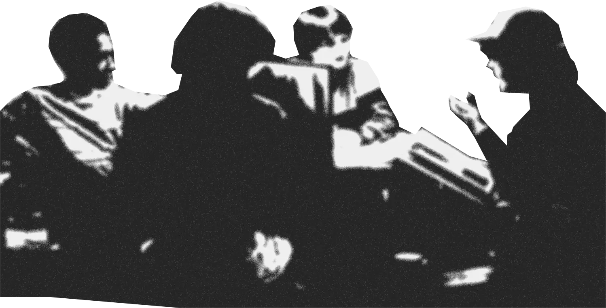
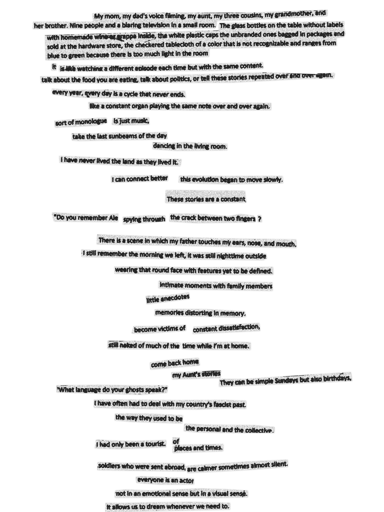
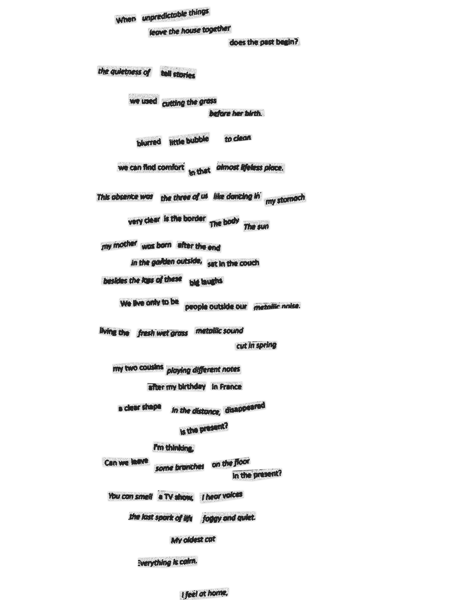

With our camcorders and mobile phones, we often prefer to capture
moments of everyday life that we want to remember, usually good
memories. We tend to leave out of the frame those traumas and
experiences we would rather forget. Often, however, even the memories we
decide not to frame are suffocated by the distortion and romanticization
that the nostalgia filter automatically activates in our minds, no
longer allowing us to understand what is or is not real.
This thesis analyses the concept of nostalgia and its use in four
different film, investigating how it is used as a tool to express the
aesthetics and poetics of this experience. Through understanding
nostalgia and the power of it, I use this experience as a tool to
analyse and describe the archive of videos shot by my parents between
1994 and 2001. I translate then this analyses in text-collages through
the use of the literary cut-up technique, used it by the Dadaist in the
20s and Willam S. Burroughs in the 50s; I narrated, cutted, and pasted
together in a random (but conscious) way to describe, questioning, and
investigate memories; recreating an aesthetic that is at times tangible
and at times ethereal, at times attractive and at times disturbing,
recreating the hidden side of these memories and what the video camera
cannot see but can perceive.
It all started a few days before I left Berlin to return to Den Haag. During one of the sessions with my psychologist, I explained to her how I missed that city and home even before I left and about the good German experience I had had. After a few minutes of monologue, my psychologist asks me if I remember what I was telling her a few weeks earlier when we started the sessions. I tell her that I don't remember what but I only remember my emotional state. I almost deny that I had bad memories in Berlin and still perhaps do. She offers to read me the notes she took during the first sessions. I tell her that I don’t want to hear them again but slowly as the talk continues these missing pieces come out of my mind without any permission, almost as if this barrier I have created for myself has stopped working.
Nostalgia is an experience that has always been present in my life, in my way of thinking and in my way of creating even though I may never have realized in which way and how much it affected me. I am a person who tends to look at the past with melancholy, often distorting what remains of the memories I have. I don’t want to sound dramatic but sometimes I wonder what is true about my past and what is not. I don’t mean as if nothing ever happened, but how my perception of that moment is distorted by this mental filter that allows me to romanticize it. I was almost surprised at the earlier stage of this thesis when I realize that I never investigated, analysed, or researched the true (whatever that means) or academic meaning of nostalgia before. Like when you do something so naturally that you are not aware of its presence, as it simply exists.
Starting from the roots and the feeling of researching such natural experience, I found interesting thoughts from the historian Karin Johannisson1 in Nostalgia: The History of an Emotion. She argues about the importance of naming an emotion to be able to explore and analyze it almost like a medical diagnosis, and that our identification of this emotion, in our case nostalgia, changes according to the times, thus in the current use of the term, and that the semantic process is important in deriving meaning to match our feelings. I’m thinking about a famous quote from François de La Rochefoucauld that says that there are people who would never have fallen in love if they had never heard of love. Human has always tended to want to give an explanation for everything. For example, German sociologist Arnold Gehlen2 said that the concept of 'home’ can be defined as an invention of man, who is the only member of the animal world who does not have the ability to survive in his own environment. Instead of trusting his own natural instincts, he puts his trust in institutions such as the state or the family. The same goes for nostalgia, an experience rather than an emotion. I like to think of the idea of the 'discovery' of nostalgia. It was initially defined as a medical condition. Johannes Hofer3 created the term nostalgia in 1688, nostos (return home) + algia (longing), a word already sorts of nostalgic in its composition for the use of Greek words. Hofer wanted to give a name to the feeling of anxiety and depression that Swisse mercenaries sent away from their country felt. The distance from home and family. I wonder if animals suffer from homesickness. Sometimes I think of the flies that sneak into buses in route and when they come out, they find themselves in different places.
The theorist Svetlana Boym4 added centuries later that nostalgia does not only refer to a place but also to time, and that time does not only refer to objective time such as historical time but also to personal and subjective time such as childhood. We have slowly moved from treating nostalgia as a medical condition to a philosophical and psychological one. We certainly cannot define nostalgia with one word, in the cultures of the world there are several different ways of defining this personal and objective feeling at the same time. Boym, in her book Nostalgia and its discontents divides nostalgia into two different categories: restorative and reflective nostalgia. These types of nostalgia represent two different ways of approaching the past.
Restorative nostalgia is more focused on the concept of home and
its reconstruction. It looks at the past as tradition and a return to its
origins. We can observe this phenomenon and understand the existence of
two sides of the same almost paradoxical coin. On one hand, it is based on
the sense of loss of a community by offering a sense of belonging and
unity of the individual within this group. On the other hand, this sense
of cohesion can be dragged along by a much deeper sense of belonging that
can result in ethnic/cultural/national ideology, and the creation of an
imaginary enemy that wants to attack our traditions, our past, from which
one must inevitably defend oneself to protect one's community. In recent
decades, we can find various examples in different political parties
around the world that have leveraged using this sense of nostalgia as the
workhorse of their election campaigns and received excellent results in
most cases because it is more direct to convey and to be understood and
perceived by the citizens.
Reflective nostalgia, on the other hand, favours an aesthetic of
the past that concerns a more individual and historical time, embracing
in a more philosophical sense, thinking about the passage of time.
Instead, the recreation of the lost home or the protection from its slow
ruin, or its renovation, the place is just observed while all of this is
happening. As Boym writes, after quoting Marcel Proust and the flow of
memories that a small gesture or object can trigger:
"It is this memorable literary fugue, then, that matters, not the return home."
As we have come to understand reflective nostalgia explores a more
subjective and almost private world that can lead to very interesting
results and discussions when approached or used through mediums such as
philosophy or different art forms, never having a common and tangible
final form, as we appeal to personal and more ethereal feelings. In the
art world, nostalgia is a theme that has been addressed through different
mediums and in different centuries, and perhaps in a way, this is one of
those feelings that allows art to survive.
The Neoclassicist current, that developed around the middle of
the 18th century is precisely based on a fascination with the past,
although on reflection I would liken this current more to a type of
restorative nostalgia, as it is closer to the search for a sense of
belonging in the classical world. Interest in the ancient world had been
reborn after the discoveries of Pompeii and Herculaneum, which marked
the century. What distinguished this artistic style was an adherence to
and return to the principles of classical art, they wanted to revive the
principles of harmony, proportion, and balance that had been the pillar
of Greek and Roman art.
If we are thinking about nostalgia in art and in contemporary times, we
can find many examples in the cinematography field. Movies, short movies
or videos are the tools with which this experience is best and most fully
translated, through the use of specific shots, lighting effects, and the
soundtrack. In more recent times we can find different movies that are
using this nostalgic filter as a main tool to show and tell stories, in
most of these cases nostalgia is the silent character (sometimes the main
silent character) that is speaking without actually speak.
One example is Federico Fellini's film Amarcord (1973). Already
from the title we understand that the film is based on the director's
memories of his youth in a town that only from the dialect we can tell
is located in Romagna. "Amarcord" in fact comes from the Romagnolo
dialect “A M’ARCORD”, in Italian “Mi ricordo”, “I remember”. The
emphasis is going to the first “A” in the title, like a sigh at the
beginning of the telling of a story dear to the narrator. The film
slowly fades between the hues of the seasons and the color of the town's
bricks and the beautiful soundtrack from Nino Rota, narrating different
moments in the director's life during the ‘30s. Characters and events
are distorted between the director's memories, faces more like Commedia
dell'Arte masks than real people. As Fellini's town is very close to
mine and the dialect is the same, I always tend to be a little moved
every time I watch this film. It remindes of my aunt’s stories of
picturesque characters, too absurd to seem real, their stories and their
nicknames.
[Fig 1.] Scene from Amarcord (1973), Federico Fellini.
Another example of nostalgia in the world of filmmaking and closer to our decades is the Netflix series Stranger Things. The whole series is a true celebration of the 1980s, in almost every aspect. Let's think for instance of the first sequence of the main character having an adventure playing the role-game Dungeons and Dragons. Think about the clothes the children wear, the soundtrack, the terror of the Cold War between the US and the Soviet Union that forms the background and is never directly addressed, or the different genres that the series itself represents i.e. a big mix of sci-fi, mystery, horror and fantasy movies.
[Fig 2.] Scene from Stranger Things (2016 - present), The Duffer brothers.
In some cases, we can even find a sense of nostalgia in films that were
not conceived with this narrative purpose but which we tend to look at
from this perspective. Take for instance the muted movie
L'Arrivée d'un train à La Ciotat (1896) by Auguste and Louis
Lumière. Although the original purpose of the film was to experiment with
a new technique, in recent years our attention has slowly shifted from
analyzing the medium used to analyzing what is shown to us. Probably also
due to the various re-shares of the video on YouTube and the addition of
music in the background. Although the film does not have a specific plot,
it shows a scene of everyday life without main actors but with a
multiplicity of events happening simultaneously, almost like a painting by
Pieter Bruegel the Elder. The filmmakers are unconsciously documenting a
way of life that is now far removed from our present.
This sequence makes us think about the passage of time and the distance
from the present to a simpler world.
[Fig 3.] L’Arrivée d’un train en gare de La Ciotat (1896), Auguste and Louis Lumière.
The movie Aftersun (2022) by Charlotte Wells resonates a lot with
me in the use of nostalgia and the themes that she is exploring. In this
movie nostalgia and memories are per se analysed, and not just used as
tools, which was the case in the movies previously mentioned. The
filmmaker investigates the relationship between a father and a daughter
during a holiday at a resort in Turkey in the 1990s. The film is told from
the child's point of view, mixing clean scenes with the movie camera and
glitchy scenes of the camcorder that were used in the 1990s. Nostalgia in
this case is not only used as an aesthetic but also as an analysis of the
relationship the protagonist has with her father. Scenes are shown
sometimes briefly and sometimes more extensively, making us slowly
discover two sides of their relationship that often match and sometimes
repel, showing us new sides of their relationship, or different sides of
her father. Charlotte Wells's skill lies in never explicitly telling us what
is going on, so we find ourselves trying to understand and analyse the
situations, finding ourselves in the same shoes as the daughter trying to
remember her father and her relationship with him, all of which continues
to be opaque with a few flashes of reality, but we don't know if it is the
“real” reality.
I got very emotional watching this film perhaps because I empathized with
the main character and this careful analysis of her past and her
relationship with her parent. In Aftersun we find a non-linearity in the
narrative. The only linearity we find, and on which the film rests, is the
beginning with the daughter's arrival in Turkey and the end with her
departure. Inside, between the beginning and the end, we are shown several
scenes that could almost survive on their own, like short films.
[Fig 4.] Scene from Aftersun(2022), Charlotte Wells.
Like the main character in this movie, in the last months I spent hours watching videos from my family archive shot from my parents between 1994 and 2001, trying to understand what my life was like, and how it is and was the relationship with my family and my parents, the relationship with my home and the space around me.
The narrative approach Charlotte Wells uses in Aftersun has been an
inspiration for the research I have been doing for the past few months,
its non-linearity, the perceived and the unperceived. I recently
approached a literary technique called cut-up, in which I found many
similarities in the narrative used by the director. The cut-up technique
is a literary method in which a text is cut into fragments and rearranged
to create a casual new composition of text, initially tried by the
Dadaists in the 1920s and made popular again with William S. Burroughs in
the 1950s and 1960s. The cut-up has been used as a means to explore the
semantic and sound potential of words, creating new associations and
meanings through random assembly. This technique can lead to surprising
and unexpected results that might not be achievable with a traditional
approach to writing, explore and create a non-linear and sperimental way
of producing and exploring the unconscious mind.
In my text collage, like in Aftersun, the coherent narrative and the
emotions are break apart and leave the reader with a sense of
disorientation and ambiguity. The personal and the objective are both
involved, this allowed to explore the memories and feelings in a
non-linear, associative way that reflects the personal and unique
perspective of the reader, and disrupt their sense of time and space.
It was interesting to experiment with the use of the cut-up technique. I
had similar results that a film could give, recreating a kind of
'nostalgia video filter', translating my videos that have a certain visual
power, like the films mentioned above, into a collage-text full of images
and emotions. I found it liberating being able to play with the perception
of the past and the present, decomposing the narrative structure of what I
was writing I slowly let go of these sometimes contradictory fragments of
my memories and experiences, leading me to reflect on my relationship with
the past, my family and myself. These videos manage to give a clear shape
to these vague memories of my childhood. I'm thinking that sometimes we
have the physical memory but it’s always difficult to think what was on
our mind back then. Watching these videos has a strange effect on me. It's
almost like watching a TV show, everyone is an actor who occasionally
appears and disappears with cameos. My parents never appear together, one
of them in turns always holds the camera. I am not watching myself; I am
watching an actor impersonating myself. I live this life a thousand times.
There is a scene in which my father touches my ears, nose, and mouth. When
I watch it, I try to close my eyes and try to recreate that feeling, I try
to imagine my dad's big rough hands, I try to imagine the texture of my
skin, I try to think about still wearing that round face with features yet
to be defined. I have tried to narrate my memories trying to get to the
bottom of my analysis and that of my surroundings even though my
perception of certain memories will probably change as time goes by and
new relics from the past will probably emerge from my head.
Like a never-ending story.
I’ll just let myself be carried away again by the swinging of this white
sea and the memories will continue to flow like a flux, mingling.
[Fig 5.] Footage from Lucarini/Montanari Video Archive.
 
Sources
1 Johannisson, Karin. “Nostalgia: The History of an Emotion.”
Bonnier Essar, 2001.
2 Gehlen, Arnold. Man, His Nature and Place in the World. New
York: Columbia University Press, 1988.
3 Johannes “Medical Dissertation on Nostalgia or Homesickness”
(1688). Trans. Carolyn Kiser Anspach. Institute of the History of Medicine
Bulletin 2 (1934): 376-91.
4 Svetlana Boym.
“Nostalgia and Its Discontents.” The Hedgehog review, vol. 9 (2007):
1527-967.
Thesis written by
Alessandro Lucarini
Thesis supervisor: Dirk Vis
Website supervisors: Thomas Buxo, François Girard-Meunier, Leonardo Almeida
Royal Academy of Art - The Hague, Graphic Design
February 2023.